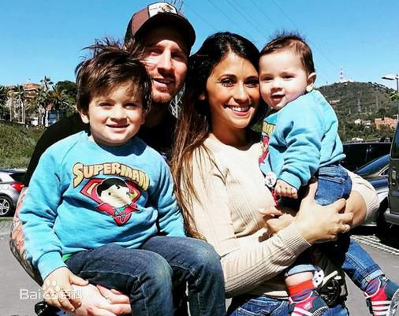

个人生活梅西的家庭
梅西的女友安东内拉和梅西一起长大，算是青梅竹马[34] 。
2012年11月2日，梅西的女友安东内拉在巴塞罗那的一家医院顺利产下一名男婴。
北京时间2015年9月11日，据西班牙媒体《每日体育报》的消息，梅西在今天迎来了自己的第二个儿子，他的女友安东内拉产下一名男婴，梅西为二儿子取名马蒂奥。[35-36]
阿根廷时间2017年6月30日，莱昂内尔·梅西和妻子安东内拉的婚礼在阿根廷罗萨里奥正式举行。[37]
2017年10月，梅西的妻子安东内拉通过Instagram宣布，她又一次怀孕，即将为梅西生下第三个孩子。[38]
社会活动
2007年，在巴塞罗那，梅西基金会在公证人的监督下正式成立了，基金会的主席是梅西。
2010年3月，梅西还将自己入选欧冠最佳阵容并当选票王所得的10万欧元全部捐给了国际红十字会[39] 。
2014年3月，巴萨博物馆扩建了馆内的"梅西展厅"。在这个展厅里，陈列着梅西获得的四个金球奖和其他荣誉，此外，通过现代化的视听多媒体设备，游人可以欣赏梅西代表巴萨打入的每一个进球[40] 。
2015年12月，梅西向一位波黑慈善家捐赠了一件签名球衣。这件球衣会被拍卖，所得款项将捐给一名在特拉夫尼克市中心医院进行治疗的儿童。[41]